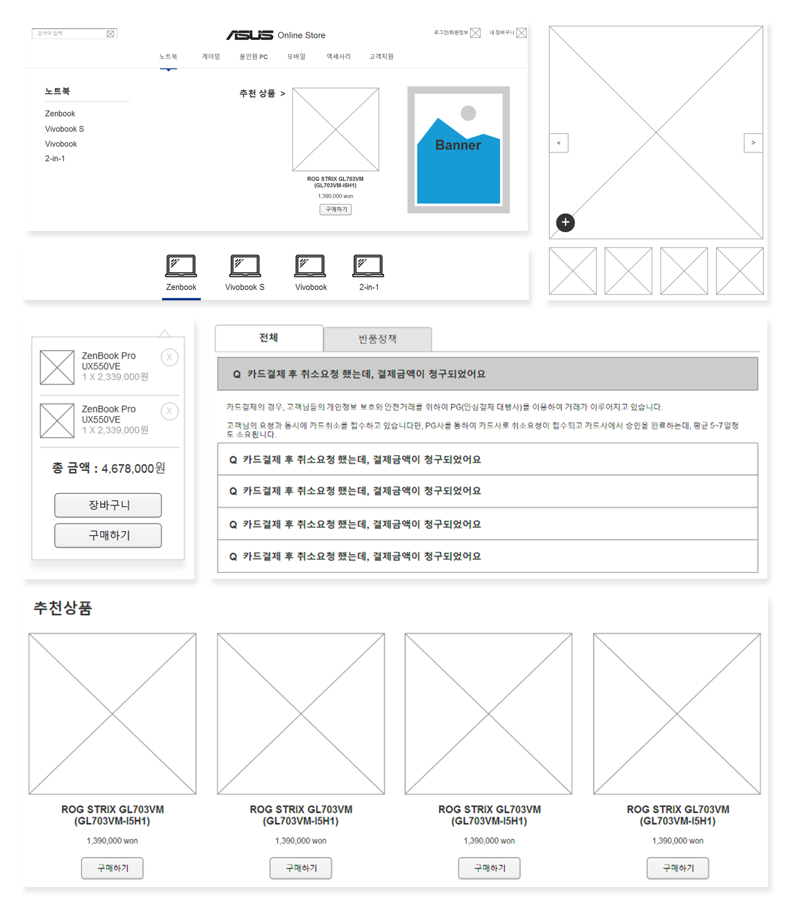
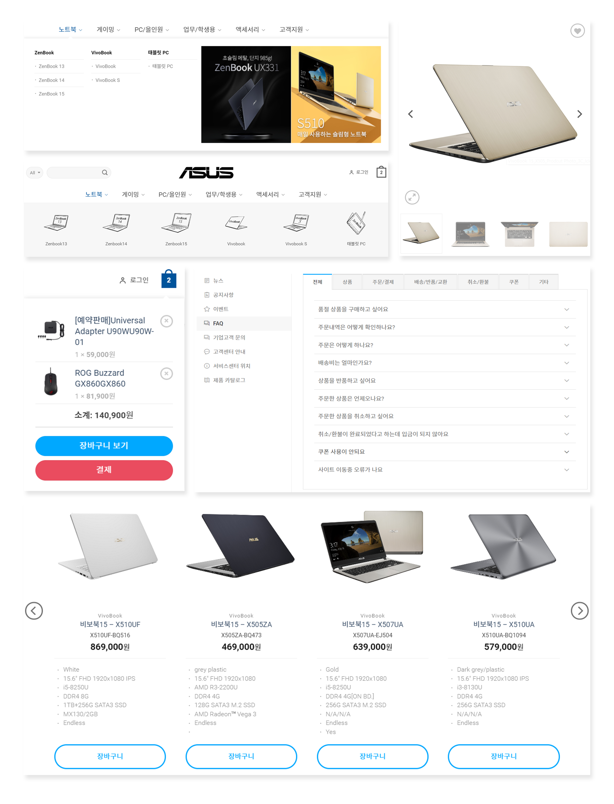
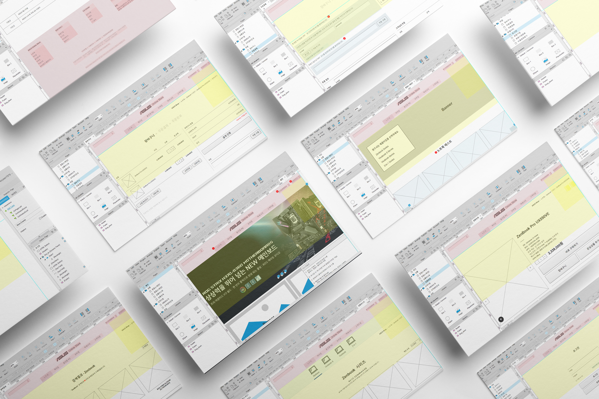

한국 쇼핑몰 구축
워드프레스 프로젝트프로젝트 기간 : 약 5개월
워드프레스 프로젝트프로젝트 기간 : 약 5개월
대만 기반의 다국적 컴퓨터 하드웨어 및 가전제품 회사 ASUS는 한국 쇼핑몰 구축 프로젝트를 진행하였습니다.
반응형으로 제작되었으며, 워드프레스를 이용하였습니다. 전반적인 기획에 참여하였으며,
워드프레스로 상품 등록 및 상품 상세페이지 퍼블리싱 서브를 진행하였습니다.
Web planning

Web publishing


Project participation
기획
PM의 주도 아래 기획에 참여하게 되었으며 프런트 기획을 작성하였습니다. WBS, IA, 화면설계서까지 전반적인 기획을 다루었습니다.
퍼블리싱
워드프레스 프로젝트로 어드민에 상품 등록을 진행하거나 페이지 생성을 하였고, 상품 상세페이지 퍼블리싱을 하였습니다.